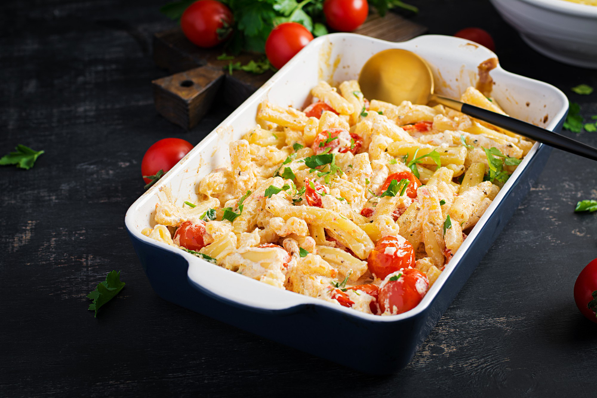

Home
Tuna Bake Recipe

Description
Cheesy, creamy and nutritious protein and iron packed Tuna Bake.
Serves upto 6 people
Can be frozen for up to 3 months.
Ingredients
- Pasta: Penne or Macaroni [385g].
- Oil: Olive Oil [1 tbsp].
- Butter: Vegan or Dairy [1 tbsp].
- Onion: Red or White [1 medium sized].
- Tuna: 3 Tins [in water or brine].
- Cream: Whipping cream or plain thick vegan yoghurt [250g].
- Seasoning: Nutmeg [1tbsp], Salt & Pepper [dash].
- Pasta Sheets: Fresh or dried [white or wholewheat].
- Cheese: Parmesan, Cheddar or Dairy Free [300g].
Steps
- Preperation:
- Preheat oven to 175°C.
- Grease an oven-proof baking dish [use butter].
- Open and drain 3 tins of tuna.
- Grate cheese into a bowl.
- Finely chop 1 onion.
- Set prepared ingredients to one side.
- Cook Pasta:
- Bring medium sized pan of water to the boil [salt to taste].
- Add pasta of your choice [stir occasionally].
- Cook until tender but firm [10-12 minutes].
- Drain pasta of excess water.
- Add olive oil to pasta and toss to get even cover.
- Cook Ingredients:
- Melt butter in large pan over medium heat.
- Optional: Add chopped mushrooms [extra protein].
- Add onion and cook until translucent [~5 minutes].
- Optional: Add peas, broccoli or spinach [extra iron].
- Add tuna and cook for 2 minutes.
- Add heavy cream [or vegan yoghurt].
- Season cream with:
- Add pasta and toss well for even cover.
- Transfer to buttered baking dish.
- Top with a generous layer of cheese.
- Cook and Bake:
- Step 1: Bake in oven for 15 minutes [175°C].
- Step 2: Remove from oven add additional cheese.
- Step 3: Cook for 3-5 minutes until golden brown.
- Optional: Garnish with fresh sprigs of parsley.